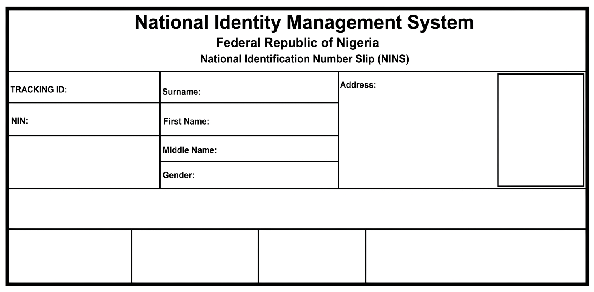

17781548471778154847
7902467893
Peter
James
Joe
M
No 7 Umouda Road Aluu
Note: The National Identification Number (NIN) is your identity. It is confidential and may only be
released for legitimate transactions. You will be notified
when your National Identity Card is ready (for any enquiries please contact NIMC)
 helpdesk@nimc.gov.ng
helpdesk@nimc.gov.ng
 www.nimc.gov.ng
www.nimc.gov.ng
 0700-CALL-NIMC
0700-CALL-NIMC
 National Identity Management Commission
11 Sokoto Crescent, Off Dalaba Street, Zone 5 Wuse, Abuja Nigeria
National Identity Management Commission
11 Sokoto Crescent, Off Dalaba Street, Zone 5 Wuse, Abuja Nigeria